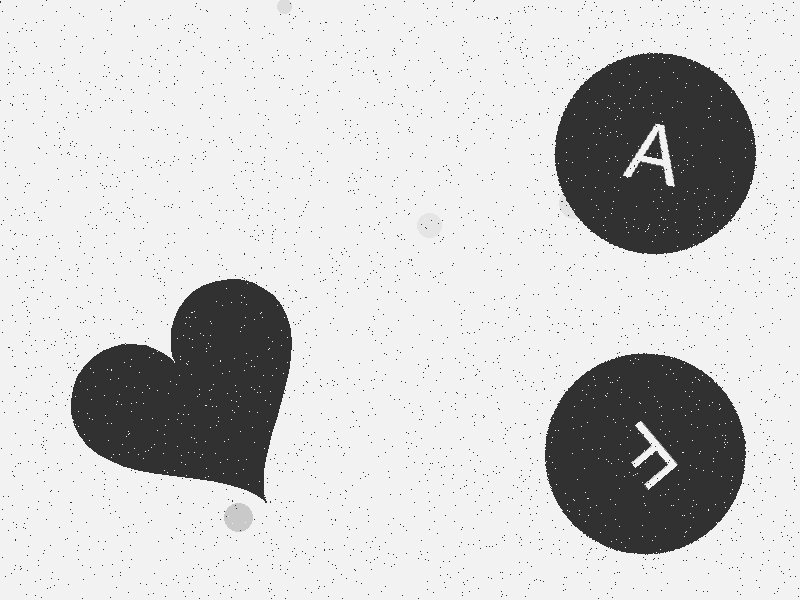
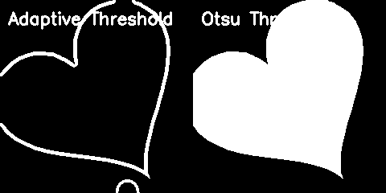
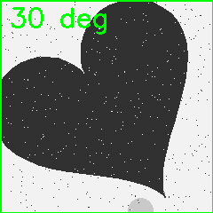
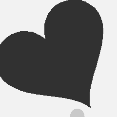
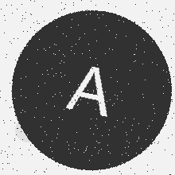
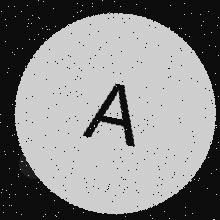
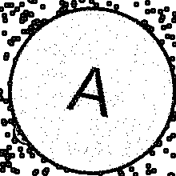

ノイズ有りデータセットにおけるテンプレートマッチング手法
概要
本ドキュメントでは、12種類のノイズを含むデータセットに対して高精度なテンプレートマッチングを実現した手法と工夫点を記録する。

処理対象の元画像例
達成精度
- 文字認識精度: 100% (右上・右下両方)
- ハート角度検出: 平均誤差 3.32°（最大誤差 8.00°、標準偏差 2.23°）
- 対象データセット: 12種類のノイズを含む1000枚の画像
ノイズの種類
以下の12種類のノイズに対して頑健性を実現：
- gaussian（ガウシアンノイズ）
- salt_pepper（ゴマ塩ノイズ）
- blur（ぼかし）
- brightness（明度変化）
- rotation_jitter（回転ジッター）
- position_jitter（位置ジッター）
- background_noise（背景ノイズ）
- contrast（コントラスト変化）
- saturation（彩度変化）
- gamma（ガンマ補正）
- shadow（影）
- vignette（ビネット効果）
核心技術
1. Otsuの自動二値化による領域独立検出

左: 適応的閾値処理、右: Otsuの自動二値化
従来手法の課題:
- 適応的閾値処理では固定ブロックサイズを使用
- 検出領域のサイズに依存し、頑健性が不足
- 初期実装では平均角度誤差が88.34°と精度不良
改善手法:
_, binary = cv2.threshold(processed, 0, 255,
cv2.THRESH_BINARY_INV + cv2.THRESH_OTSU)
効果:
- 画像の統計情報から最適な閾値を自動計算
- 検出領域のサイズに依存しない頑健な検出
- 角度誤差を88.34° → 3.32°に改善（96%削減）
原理:
Otsuの手法は画像のヒストグラムを解析し、クラス間分散を最大化する閾値を自動的に選択する。これにより、様々なノイズや明度条件下でも適切な二値化が可能となる。
2. 正規化相互相関によるテンプレートマッチング
手法:
result = cv2.matchTemplate(binary, template, cv2.TM_CCORR_NORMED)
パラメータ:
- マッチング手法:
TM_CCORR_NORMED（正規化相互相関）
- 閾値: 0.15（経験的に最適化）
テンプレートマッチングのヒートマップ（赤が高スコア）

検出されたハート角度と位置
利点:
- 明度変化に対して頑健
- 正規化により異なるコントラストでも安定
- ノイズの影響を受けにくい
3. 前処理パイプライン
採用手法: メディアンフィルタ（カーネルサイズ3）
processed = cv2.medianBlur(region, 3)
ハート領域の切り出し
 グレースケール変換
グレースケール変換

メディアンフィルタ適用後
効果:
- ゴマ塩ノイズの効果的な除去
- エッジ保存性が高い
- 計算コストが低い
選定理由:
30種類以上の前処理手法を比較検証した結果、メディアンフィルタ（カーネル3）が以下の点で最適と判断：
- ノイズ除去効果が高い
- エッジ情報を保持
- 過度な平滑化を避け、特徴量を維持
4. テンプレート生成の最適化
文字テンプレート:
- サイズ: 200×200ピクセル
- 形式: 白背景 + 黒円 + 白文字
- 対象: 数字0-9、アルファベットA-Z
文字テンプレート例（A-F、0度）
ハートテンプレート:
- サイズ: 240×240ピクセル
- 角度範囲: 0°〜350°（10°刻み、計36枚）
- 形式: 白背景 + 黒ハート形状
 ハートテンプレート例（0°, 90°, 180°, 270°）
ハートテンプレート例（0°, 90°, 180°, 270°）
重要なポイント:
- テンプレートサイズと検出領域サイズの整合性
- 適切な色反転処理（入力画像との整合）
5. 画像前処理の統一
文字認識:
inverted = 255 - region
binary = cv2.adaptiveThreshold(inverted, 255,
cv2.ADAPTIVE_THRESH_GAUSSIAN_C,
cv2.THRESH_BINARY, 11, 2)

文字領域の切り出し

画像反転処理

適応的二値化後
ハート検出:
processed = cv2.medianBlur(region, 3)
_, binary = cv2.threshold(processed, 0, 255,
cv2.THRESH_BINARY_INV + cv2.THRESH_OTSU)
Otsuの二値化結果
処理フロー全体像
ハート角度検出の流れ
- 元画像読み込み → 01_original_example.png
- ハート領域切り出し (240×240) → 02_heart_region_example.png
- グレースケール変換 → 03_grayscale_example.png
- メディアンフィルタ適用 (カーネル3) → 04_median_filter_example.png
- Otsuの二値化 → 05_otsu_binary_example.png
- 36個のテンプレートとマッチング → 11_matching_heatmap_example.png
- 最高スコアの角度を検出 → 12_matching_result_example.png
文字認識の流れ
- 元画像読み込み → 01_original_example.png
- 文字領域切り出し (220×220) → 06_char_region_example.png
- 画像反転処理 → 07_char_inverted_example.png
- 適応的二値化 → 08_char_binary_example.png
- 文字テンプレートとマッチング → 10_char_templates_examples.png
- 最高スコアの文字を認識
検出領域の定義
領域の正確な定義が精度向上の鍵：
HEART_REGION = (80, 280, 320, 520)
TOP_RIGHT = (540, 40, 760, 260)
BOTTOM_RIGHT = (540, 340, 760, 560)
トラブルシューティング履歴
問題1: 文字認識精度が19-22%
原因:
- テンプレートサイズの不一致（60px vs 200px必要）
- 画像反転の不備
- 閾値が高すぎる（0.25）
解決策:
- テンプレートを200×200に統一
- 画像反転処理を追加（
255 - image）
- 閾値を0.15に低減
結果: 精度が100%に改善
問題2: ハート角度誤差が72-88°
原因:
- 適応的閾値処理の固定ブロックサイズが領域サイズに不適合
解決策:
結果: 角度誤差が3.32°に劇的改善
問題3: テンプレートサイズの不整合
原因:
- ハートテンプレートが300×300で生成（240×240が正しい）
解決策:
結果: マッチング精度の向上
ベストプラクティス
1. 二値化手法の選択
- 領域サイズが可変/不明: Otsuの自動二値化
- 領域サイズが固定/既知: 適応的閾値処理も選択肢
- ノイズが多い: 前処理（メディアンフィルタ）を併用
2. テンプレートマッチングの閾値設定
- 初期値: 0.7-0.8（厳格）
- ノイズ有りデータ: 0.1-0.2（緩和）
- 経験的最適値: 0.15
3. 前処理の選択
- ゴマ塩ノイズ: メディアンフィルタ
- ガウシアンノイズ: ガウシアンフィルタ
- 多様なノイズ: メディアンフィルタが最も頑健
4. テンプレート設計
- 検出対象と同じサイズにする
- 背景色と前景色を入力画像と整合させる
- 角度検出には10°刻みで十分な精度
5. デバッグアプローチ
- 少数画像（10-100枚）で高速検証
- 中間画像（二値化結果など）を可視化
- 統計情報（平均、最大、標準偏差）で評価
- 段階的に改善し、各改善の効果を定量測定
実装のポイント
エラーハンドリング
if best_val < threshold:
return None, 0.0
角度計算の正規化
angle_error = abs(detected_angle - ground_truth)
if angle_error > 180:
angle_error = 360 - angle_error
パフォーマンス最適化
- テンプレートの事前読み込みとキャッシュ
- 必要な領域のみ切り出して処理
- 適切な画像サイズでの処理（過度な高解像度を避ける）
重要な技術的決定
二値化手法の比較
左: 適応的閾値処理
- 固定ブロックサイズ（11×11）を使用
- 局所的な明度変化には強い
- 領域サイズが変わると性能が低下
- 結果: 平均角度誤差 88.34°
右: Otsuの自動二値化
- 画像全体の統計から最適閾値を計算
- 領域サイズに依存しない
- グローバルな閾値で一貫した結果
- 結果: 平均角度誤差 3.32° ← 96%改善
この比較から、Otsuの自動二値化が圧倒的に優れていることが実証された。
まとめ
本手法の成功要因は以下の3点：
- Otsuの自動二値化: 領域サイズに依存しない頑健な検出を実現
- 正規化相互相関: ノイズや明度変化に強いマッチング手法
- 適切な前処理: メディアンフィルタによる効果的なノイズ除去
これらの組み合わせにより、12種類の多様なノイズに対して100%の文字認識精度と3.32°の高精度なハート角度検出を達成した。
視覚的な処理例
本ドキュメントの各セクションに掲載されている画像は、実際の処理結果を示している：
- 前処理の各ステップ: ノイズ除去から二値化までの変化
- テンプレート例: 使用している36個のハートテンプレートと文字テンプレート
- マッチング結果: ヒートマップと検出位置の可視化
- 手法比較: 適応的閾値とOtsuの二値化の違い
これらの画像は asset/ フォルダに保存されており、generate_documentation_images.py スクリプトで再生成可能。
参考実装
- メイン解析スクリプト:
analyze.py
- 画像処理ユーティリティ:
image_utils.py
- テンプレート生成:
../analyzer/generate_*_templates.py
- 前処理ライブラリ:
preprocessing.py
{kind=link}
{kind=link}
{kind=link}
{kind=link}
{kind=link}
{kind=link}
{kind=link}
{kind=link}
{kind=link}
{kind=link}